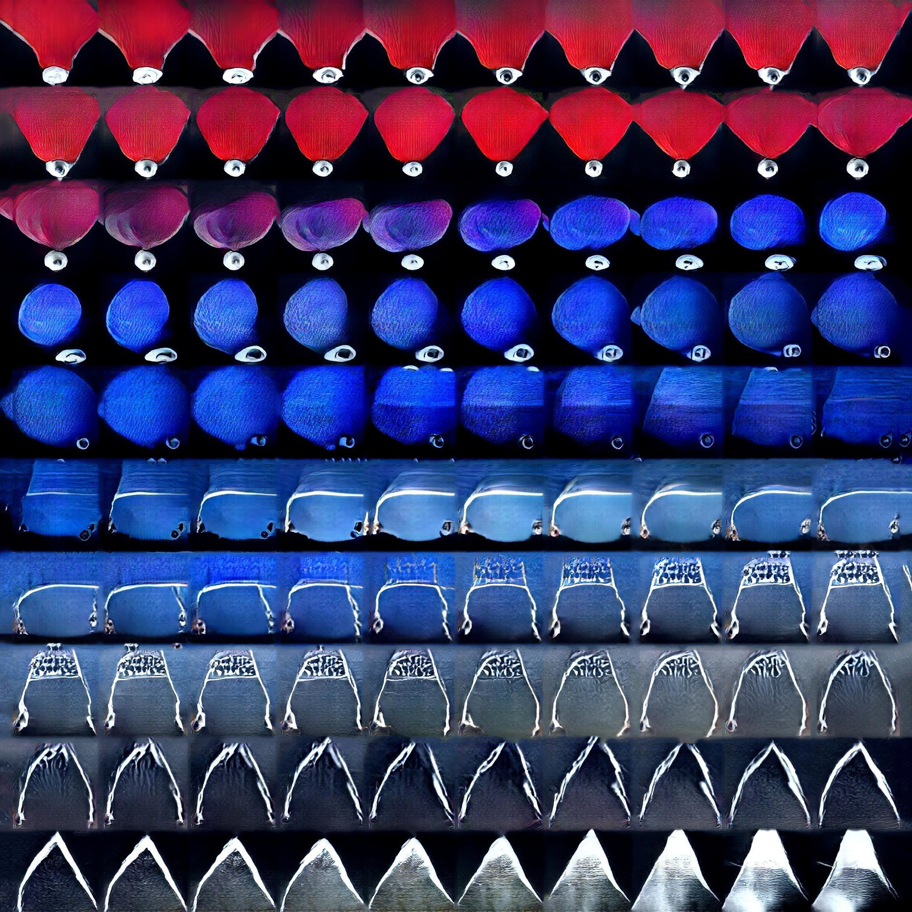

Installlation for Sculpture In The City, 2021.
For this 6 hour iteration, a new soundscape by The Analog Girl was commissioned in partnership with MSCTY x Sculpture in the City.


2021 Iteration | soundscape by The Analog Girl

Gregory White Modular Synth Performance - Bandcamp, Slade (UCL) May 2017